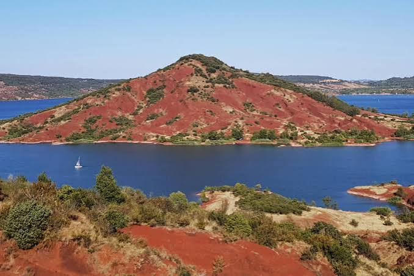

Lac du
SalagouTerres rouges volcaniques


⟹ Sites Emblématiques ⟸
Le lac du Salagou est un paysage récent posé sur une histoire géologique exceptionnellement ancienne. Bien avant la retenue d’eau, la vallée était creusée dans les fameuses « ruffes », roches rouges formées à la fin de l’ère primaire, au Permien, il y a environ 250 à 270 millions d’années. Leur couleur provient de l’oxydation du fer dans des sédiments déposés sous un climat chaud. Ces couches rouges conservent par endroits des traces fossiles et sont recoupées ou surmontées par des formations basaltiques liées au volcanisme beaucoup plus récent de l’Escandorgue.
Pendant des siècles, la vallée du Salagou est un territoire agricole. Le ruisseau, modeste une grande partie de l’année mais capable de crues brutales, traverse des terres de vignes, d’oliviers, de céréales, de pâturages et de garrigues. Les villages de Celles, Octon, Liausson, Salasc, Le Puech et Clermont-l’Hérault vivent d’une polyculture méditerranéenne et d’un réseau de chemins anciens. La future cuvette du lac est donc, jusqu’au milieu du XXe siècle, un paysage habité, cultivé et parcouru.

Dans les années 1950, la crise de surproduction viticole pousse les pouvoirs publics à rechercher une diversification de l’agriculture héraultaise, notamment vers l’arboriculture irriguée. Le projet d’un grand réservoir est étudié et le choix se porte finalement sur la vallée du Salagou. En 1959-1960, la décision politique et la déclaration d’utilité publique ouvrent la voie aux acquisitions foncières et aux expropriations. Le Département de l’Hérault devient maître d’ouvrage du projet, dont l’un des objectifs est également de contribuer à l’écrêtement des crues.
Les travaux du barrage commencent en 1964. L’ouvrage, construit à proximité de Clermont-l’Hérault, est un imposant barrage en enrochements basaltiques d’environ 60 mètres de hauteur et 357 mètres de longueur en crête. Sa réalisation mobilise d’énormes quantités de roche et constitue pour l’époque un chantier technique majeur. Le projet initial prévoyait aussi un vaste réseau d’irrigation vers la vallée de l’Hérault ; celui-ci ne sera finalement pas réalisé à l’échelle envisagée.
La fermeture des vannes en 1969 marque le début de la mise en eau. Contrairement à certaines prévisions, le remplissage est rapide et le niveau atteint progressivement la cote retenue au début des années 1970. L’eau recouvre terres agricoles, bâtiments, portions de routes, ponts et anciens chemins. Le village de Celles, initialement promis à la submersion, est évacué et exproprié mais reste finalement au-dessus du niveau du lac ; vidé de ses habitants, il devient pendant plusieurs décennies le symbole humain du bouleversement provoqué par le barrage. Le hameau des Vailhés reste lui aussi hors d’eau.
Le nouveau lac bouleverse totalement la perception du territoire. Des villages agricoles deviennent soudain riverains d’un vaste plan d’eau d’environ 750 hectares. Les terres rouges de la ruffe, le noir des basaltes, la végétation méditerranéenne et le bleu de l’eau composent un paysage inédit. Ce contraste, aujourd’hui emblématique, n’était donc pas un héritage immuable : il est le résultat spectaculaire d’un aménagement contemporain venu révéler la géologie ancienne.
Très vite, le lac attire pêcheurs, promeneurs, campeurs, véliplanchistes et visiteurs. À partir des années 1980 et 1990, la nécessité de protéger le paysage contre une fréquentation et des aménagements mal maîtrisés s’impose. Le site est progressivement classé et fait l’objet d’une politique paysagère associant préservation des berges, maintien de l’agriculture, gestion des loisirs et restauration du patrimoine bâti. Une petite centrale hydroélectrique est également installée en aval du barrage dans les années 1980.
Celles connaît parallèlement une histoire singulière. Après des décennies d’abandon et de débats sur son avenir, la commune engage un projet de réhabilitation destiné à faire revivre le village sans effacer la mémoire des expropriations et de la mise en eau. Cette renaissance est devenue l’un des symboles de la résilience du territoire.
En 2024, l’ensemble « Salagou – Cirque de Mourèze » obtient le label Grand Site de France, aboutissement de plusieurs décennies de protection et de gestion concertée. Le lac du Salagou est ainsi passé, en un peu plus d’un demi-siècle, du statut d’ouvrage hydraulique destiné à transformer l’agriculture à celui de paysage patrimonial majeur. Son histoire associe géologie permienne, volcanisme, civilisation rurale, grands travaux des Trente Glorieuses, traumatisme des expropriations et invention progressive d’un nouveau rapport au paysage.
Le paysage du Salagou doit sa couleur à la ruffe, une argile rouge permienne, et son relief à d'anciennes coulées de basalte volcanique visibles notamment sur le site du Mont Liausson. Ce mélange de teintes ocre, de roches sombres et du bleu du lac crée une palette rare en France métropolitaine.
Une biodiversité méditerranéenne remarquable s'est installée autour du plan d'eau : garrigue, pelouses sèches et une avifaune protégée profitent de ce territoire agropastoral préservé.
— Syndicat mixte du Grand Site Salagou – Cirque de MourèzeLe contraste entre l'aridité des terres rouges et la fraîcheur du lac attire aussi bien les amateurs de paysages spectaculaires que les familles en quête de baignade, dans un territoire qui reste, hors saison estivale, remarquablement calme et sauvage.
Cirque de Mourèze à quelques minutes de route, ce chaos dolomitique partage avec le Salagou le même label Grand Site de France.
Villeneuvette ancienne manufacture royale de draps du XVIIe siècle, aujourd'hui village-atelier restauré, à visiter pour son architecture industrielle unique.
Clermont-l'Hérault ville-porte du Grand Site, avec son château et son marché provençal animé.
Lodève à une vingtaine de minutes, cette ancienne cité épiscopale abrite un musée consacré à Soulages et aux fossiles du Permien.